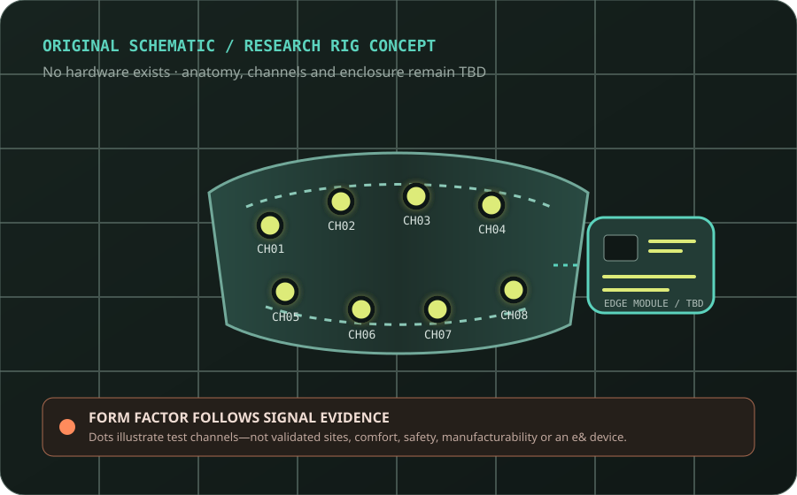
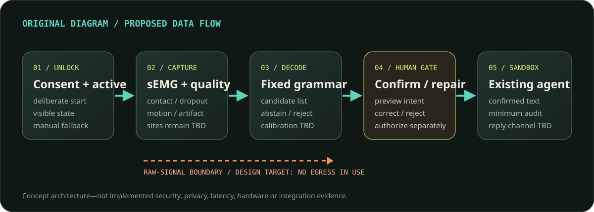

A confirmation-first silent command channel for e& frontline work—proposed as research, not presented as mind reading.
TOMORROW
Interaction proof
Offline concept / simulated pipeline. Authored traces and failure behavior.
NEXT PROOF
Fixed command grammar
Surface-EMG research rig, one workflow, pre-agreed evidence gates.
NOT CLAIMED
No open conversation
No wearable, model, project accuracy, AAC indication, customer, or deployment.

Claim boundary: C01–C06, C21–C30. Working name; brand/team/contact remain TBD. Original schematic—no device exists.
Problem hypothesis / 02
Voice can be costly. Touch can break the moment.
Test whether a deliberate private-input path helps when an advisor or technician needs information without losing eyes, hands, or the customer conversation.
Discovery gapNo interview, observed frequency, baseline task result, user preference, buyer, procurement path, or willingness-to-pay evidence has been supplied.
SCENES
busy retail interaction · work at a customer site · private lookup in a meeting
ALTERNATIVES
touch shortcut · keyboard · push-to-talk · ordinary voice · earpiece · whisper/contact mic · colleague · no system
WIN BAR
Improve the whole task—including setup, correction, fallback and user preference—not just model inference.
Evidence status: commercial problem hypothesis from the supplied source deck, not validated customer evidence. C06, C24, C29.
Why now—honestly / 03
Three category signals. None proves this product.
WEARABLE RESEARCH · PREPRINT
SilentWear
Four participants, 14 neck channels, eight commands plus rest, on-MCU classification. Transfer gap remains material.
SHIPPING GESTURE PRODUCT · COMPANY
Meta Neural Band
US$799 bundle available September 2025. Wrist gestures and handwriting—not speech from muscle.
PATENT + ACQUISITION CONTEXT
Q Cue / Apple
Coherent-light facial micromovement approach, not electrodes. Apple terms undisclosed; no product performance.
OpeningSensors are entering wearables. Speech transfer across sessions is still research. That gap is both the opportunity and the risk.
Sources: SilentWear arXiv:2603.02847v2 (preprint); Meta official product announcement; US20240119938A1 / US12204627B2 metadata. C07–C17; R26–R31.
Captain-selected beachhead / 04
e& frontline retail advisors and field technicians.
Start opt in, non-medical, and low consequence. Stage 0 chooses one workflow and tests the two roles separately before any biosignal collection.
lookup / navigateREAD ONLY
repeat / hold / resumeWORKFLOW
cancel / yes / noCONTROL
OUT OF FIRST STAGE
Customer-record changes, payments, access control, performance scoring, emergency work, diagnosis, or replacement AAC. A conventional fallback remains available.
USER VALUE GATE
Current controls must lose
A recurring private-input job, named baseline and user preference are required.
CONSENT GATE
Voluntary means voluntary
Non-biometric alternative; no performance-management or employment consequence.
ERROR GATE
Confirmation contains harm
Command grammar and fallback must survive false accepts and rejects.
OPERATIONS GATE
Contact/calibration must fit
Setup, skin, fatigue and reapplication are product costs, not lab footnotes.
Decision authority: Captain, 2026-07-28; provenance/decisions.md. This is a beachhead decision, not customer/traction evidence. C06, C18–C25.
Proposed mechanism / 05
Capture → decode → human gate → existing assistant.

Phase splitIn-use raw retention/egress are design-off defaults. A future calibration study may use paired audio only under separate, explicit consent and retention rules. Reply modality remains open.
Boundary: architecture intent, not implemented device/security/integration evidence. 2.47 ms is external model inference—not complete latency; SilentWear windows are 0.8–1.4 s. C04–C08, C13–C17, C27.
Tomorrow demo / 06
Show the miss. Make repair the product.
Declare
Concept / simulated. No sensor, model, biometric input or project accuracy.
Unlock
Deliberate page state; inspect the illustrative 12-command grammar.
Inspect
Authored traces, features and scripted alternative candidates.
Fail + repair
Ambiguous case rejects; manual authored repair still requires confirmation.
Do not fake liveThe failure, score, threshold and timing are authored fixtures—not a replay of a published error distribution. The presenter never mouths a command as if the browser sensed it.
Closest modality evidence; no transfer to this project
wrist sEMG
Meta shipping gesture/handwriting input
Sensor-class precedent; explicitly not speech
optical
Q Cue patent + Apple acquisition context; unreleased capability
Coherent light, not electrodes; no product performance
ear/acoustic/IMU
EarCommand, EchoSpeech and MuteIt peer-reviewed research systems [R38–R40]
Tasks and sensing conditions differ; compare whole-task value
assistive / implanted
Whispp company-described apps [R41]; AAC products and clinical studies vary
Acoustic/assistive/clinical paths differ; verify availability and approval
UnknownNo regional leadership, moat, FTO, approved silent-speech product, customer win, or acquisition path is claimed.
Sources: R03–R05, R21, R26–R31, R38–R41; research/competitors.md. Named ear/acoustic/IMU systems are papers; Whispp status is company-described; legal conclusion/FTO requires counsel.
Strategic asset hypothesis / 10
A Gulf bilingual corpus—governed before owned.
No public Arabic surface-EMG silent-speech corpus was identified in this bounded review; the cited sEMG performance exemplars are English.
Asset testScope dialect/code-switching with native users; preserve consent, withdrawal/deletion, labor separation, reuse rights, representation, security and no secondary licensing without new consent.
COMMERCIAL-CLEAN STARTING POINTS
Gaddy / SilentWear code
Gaddy code MIT; dataset record CC BY 4.0. SilentWear code Apache-2.0 at checked commit. Data/model/dependencies remain separate reviews.
NOT COMMERCIAL INPUTS
Meta asset terms
Checked generic-neuromotor code CC BY-NC; emg2qwerty CC BY-NC-SA. No commercial dependency assumption.
NO LICENCE
Named BCI repositories
Two checked implanted-BCI repos have no LICENSE file; no default reuse permission.
RIGHTS BEFORE MOAT
Foreground deal terms
e& ownership is a proposed negotiation; participant/data rights and background IP are not erased.
Bounded finding + exact revisions: C24–C26; R05, R16–R17, R26–R29, R34–R37. No data/model downloaded. “No corpus identified” is not proof none exists.
Commercial path / 11
Operating value first. Strategic upside second.
AED 1MCaptain-approved fixed fee · 90-day pilot · not annual pricing, strategic funding, valuation or exit value
Lead path
Fixed-fee 90-day pilot → per-seat annual deployment at TBD pricing only if evidence gates pass.
Strategic upside · unpriced
e& may fund and negotiate ownership of resulting foreground IP and a governed Gulf bilingual dataset, preserving acquisition/exit optionality.
Terms still TBD
background/foreground IP · contributor rights · data stewardship · model licence · publication/negative results · termination · all later amounts.
Not a return forecastAcquisition is optionality, not the business model and not a promised outcome. Pilot evidence remains the gate.
Decision authority: Captain, 2026-07-28; provenance/decisions.md. No market size, revenue, unit economics, customer, partner, annual price or strategic/exit amount is asserted.
The ask / 12
Fund a 90-day decision—not an enclosure.
AED 1,000,000 fixed fee for a gated pilot with an explicit go / change / stop report. Later per-seat pricing, strategic funding and acquisition/exit amounts are TBD.
1Name one workflow owner and one data-governance owner.
2Provide voluntary access to retail-advisor / field-technician discovery—no biosignal collection before approvals.
3Open a sandbox only after discovery, protocol and security/data-flow gates.
Boundary: fee approved by Captain for the fixed 90-day pilot only. Cohort, partner, team, thresholds, allocations, deliverables, later pricing/funding and deployment remain unagreed/TBD.
Pre-committed decision / 13
Go. Change. Or stop on purpose.
GATE 0 / PROBLEM
Whole task
Voice/touch/shortcut baseline; voluntary user preference.
Stop if existing input wins or power risk remains.
Thresholds before dataAll numeric GO thresholds, cohort, command grammar and analysis plan remain TBD until workflow, statistics, ethics/safety and governance owners approve them. A stopped product can still be a successful evidence programme.
Claim ledger: safe now = offline simulated interaction + attributed external evidence. Unknown = all project performance and commercial value. Prohibited = hardware/accuracy/AAC/privacy/traction claims. See research/claim-ledger.md.
Talk track: This is not “talk to AI without speaking.” It is a command-channel research proposal. Tomorrow’s executable proof is the interaction and failure handling, not sensing.
Do not say: device, prototype hardware, reads words/thoughts, open vocabulary, accurate, behind-ear, private, customer, or pilot already agreed.
Repository trace
research/claim-boundary.md · research/claim-ledger.md · original image pitch/assets/concept-research-rig.svg.
Talk track: Keep the source deck’s concrete moments, then volunteer that no user discovery was supplied. A shortcut or ordinary headset may be the correct answer.
The beachhead is captain-selected. The pain, workflow and willingness to pay remain hypotheses.
Source
research/presentation-review.md, “Problem and user evidence.”
Talk track: Separate category evidence. SilentWear is a four-person command preprint. Meta shipped a wrist gesture product. Q Cue describes optical sensing. None validates an e& speech device.
Apple transaction terms are undisclosed. Do not state a hard acquisition price or electrode validation.
Talk track: The captain selected e& frontline retail advisors and field technicians. Stage 0 still chooses one exact workflow and measures role differences; do not pool them into fake certainty.
Voluntary enrollment, conventional fallback and separation from performance management are non-negotiable.
Decision trace
provenance/decisions.md.
Talk track: The downstream assistant can be reused; the decoder is new AI. Alternatives and abstention must remain visible. “On device” requires full profiling on named hardware.
SilentWear’s 2.47 ms is model inference after a sensing window. Do not call it end-to-end latency.
Operator: Open ../demo/index.html. Unlock. Scenario 1 → confirm → show egress. Scenario 2 → reject → authored repair → confirm. Do not silently mouth a phrase as if input were live.
All delay, error, scores and traces are authored. Published error rates are discussed only on slide 7 with conditions.
Fallback
demo/PRESENTER.md and the static five-stage rail.
Talk track: This is the trust slide. Read the conditions before the headline. The held-out-session drop is the product risk. Battery life is estimated, comfort unknown.
No compliance claim. UAE Executive Regulations status and legal interpretation require counsel.
Talk track: Name AlterEgo before the audience does. Compare exact category/status, not logos. Meta is gesture, Q Cue is optical, and the named ear/acoustic/IMU alternatives are peer-reviewed research systems with different sensing assumptions. Whispp describes acoustic voice-reconstruction apps; clinical systems are separate.
No product approval, FTO, regional leadership, funding total or competitor performance is claimed without exact evidence. Whispp status is company-described, not independent validation.
Talk track: The bounded scan did not identify an Arabic sEMG corpus; do not turn a negative search into certainty. Language/dialect and consent make the corpus more expensive, not automatically more valuable.
Licence trace
Gaddy code commit a89357…, MIT; Zenodo 10.5281/zenodo.4064409, CC BY 4.0 metadata.
SilentWear commit b341c3…, Apache-2.0 code.
Meta exact-commit licenses are non-commercial; named BCI repos contain no LICENSE.
Do not download/use any artifact until code, data, model, consent and dependency terms are separately approved.
Talk track: Lead with the operating path. AED 1M funds the 90-day pilot; deployment is per-seat annually only if gates pass. Strategic e& IP/data ownership is a negotiated upside path.
Do not price annual seats, strategic funding, valuation, or acquisition/exit. Do not imply participant rights can be assigned away or that an acquisition will occur.
Decision trace
provenance/decisions.md.
Talk track: Ask for AED 1,000,000 and accountable owners. The work begins with workflow discovery and approvals, not immediate biometric collection or enclosure design.
The fee applies only to the fixed 90-day pilot. Cohort, thresholds, allocations, team, sandbox, later pricing and deployment remain TBD/unagreed.
Talk track: A sponsor should know in advance what can stop the work. Thresholds are not filled with confident-looking inventions; workflow, statistical, ethics/safety and governance owners approve them before collection.
The scout proposed example numbers, but they were recommendations—not validated thresholds. A negative decision can be the pilot’s useful result.